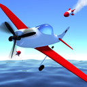
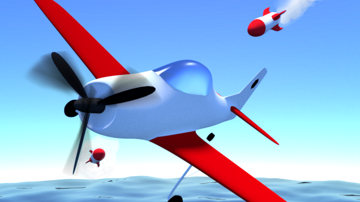

Introduction
AirWings.io is a thrilling, fast-paced multiplayer aerial combat game that drops you right into the cockpit of a fighter jet. Unlike traditional dogfighting games that rely heavily on shooting, AirWings.io uniquely focuses on intense evasion and agility. Your primary objective is to stay airborne while dodging relentless heat-seeking missiles. What makes this game truly special is its emphasis on precise maneuvering and quick reflexes over simple trigger-pulling. Players love the adrenaline-pumping tension of watching a red warning icon appear and executing a last-second loop to survive. With its sleek graphics, smooth controls, and the satisfying challenge of making enemy missiles crash into each other, AirWings.io offers a highly addictive experience that keeps you coming back for just one more run to beat your high score.
Getting Started

To start your journey in AirWings.io, simply visit the official website and click play to immediately drop into the sky. The controls are intuitive but require precision. Use your mouse or arrow keys to steer your fighter jet, swerving left, right, up, and down to navigate the open skies. Your plane moves continuously forward, so your main task is to adjust your trajectory. Keep your eyes glued to the screen for the red warning icon, which indicates an incoming heat-seeking missile. When you see the warning, wait for the missile to close the distance before making a sharp, sudden turn to dodge it. As you fly, look out for collectibles scattered across the map. Grab stars to increase your score and snatch booster icons to gain a temporary burst of speed, which can help you escape tight situations or close gaps quickly. Mastering the timing of your dodges and the collection of these power-ups is the fundamental first step to dominating the skies and surviving longer in each match.
Basic Tips
1. Master the Dodge Timing: Do not turn away the moment you see the red warning icon. Wait until the missile is just a few pixels away before executing a sharp swerve. Turning too early allows the missile to adjust its trajectory and track you longer. 2. Utilize Tight Loops: When a missile is hot on your tail, perform a tight, continuous loop rather than a single sharp turn. This forces the missile into a wider turning radius, often causing it to overshoot and miss you completely. 3. Prioritize Boosters: Always aim for booster icons when you have a clear path. A sudden burst of speed not only increases your score multiplier but also breaks the tracking lock of slower missiles, giving you crucial breathing room. 4. Collect Stars Safely: Never risk a close missile encounter just to grab a star. Only divert your path for stars when the sky is clear, as getting hit resets your momentum and ruins your score run.
Advanced Strategies

1. The Missile Collision Trick: When chased by multiple heat-seeking missiles, fly in a wide, sweeping arc. The missiles will attempt to cut the corner to intercept you. If timed perfectly, the trailing missiles will collide with the leading ones, destroying both and instantly clearing your airspace. 2. Altitude Management: Do not just fly in a flat horizontal plane. Constantly change your altitude by diving and climbing. Missiles have different vertical and horizontal turn rates; mixing your 3D movement makes it mathematically harder for their tracking algorithms to predict your exact position. 3. Edge Surfing: Fly close to the invisible boundaries of the map. While risky, missiles often struggle to calculate tight turns near the edges, sometimes causing them to fly out of bounds or crash into the map's perimeter. 4. Booster Stacking: If you manage to grab two booster icons in quick succession, use the massive speed spike to fly directly through a cluster of stars, maximizing your score multiplier while the speed renders you virtually untouchable by standard missiles.
Pro Tips

1. Micro-Dodging: Instead of large, sweeping evasive maneuvers, use micro-dodges. Tiny, rapid adjustments to your flight path force the missile's tracking to constantly overcorrect, draining its fuel or causing it to stall out without you losing much of your forward momentum. 2. Visual Cue Reading: Watch the missile's exhaust trail, not just the red warning icon. The color and density of the smoke can tell you how close the missile is and how aggressively it is turning, allowing for frame-perfect reactions. 3. Rhythm Breaking: Do not fly in predictable, rhythmic patterns. Missiles in advanced waves learn your movement tendencies. Introduce random, erratic zig-zags every few seconds to completely break their predictive tracking algorithms and survive the late-game missile swarms.
Conclusion
AirWings.io is a masterclass in tension and reflex-based gameplay, offering a uniquely thrilling take on the aerial combat genre. By focusing on evasion, precise timing, and clever maneuvering, it delivers an endlessly replayable experience. Jump into the cockpit, master the art of the dodge, and see how long you can survive the relentless skies.